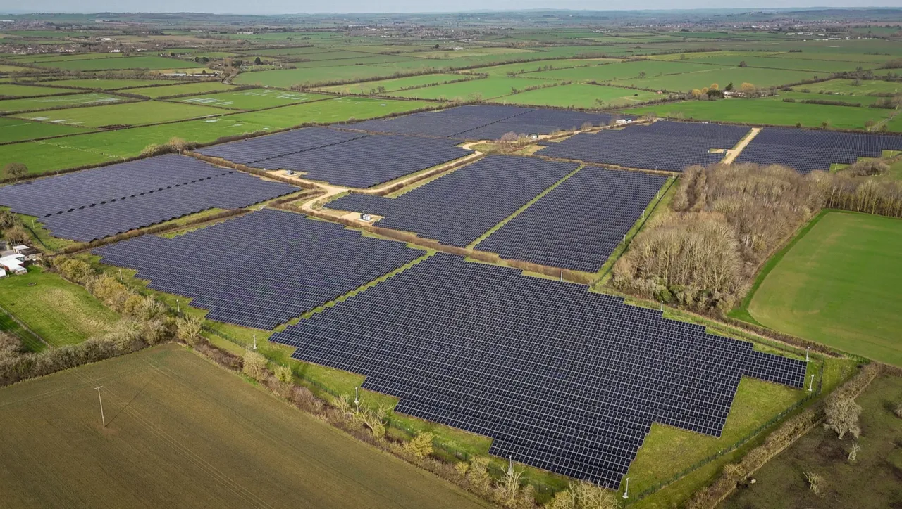

Understanding how the UK’s energy generation and emissions data can be structured, managed, and analysed through a relational database system.

UK Energy Monitor is a database-driven system designed to store and manage electricity generation and carbon emissions data across the United Kingdom. The system demonstrates how real government datasets can be modelled using relational database principles and presented through a simple web interface.
The aim of this project is to show how energy data can be normalised, structured, and queried effectively. It allows users to view generation records, track emissions over time, and compare renewable and non-renewable energy sources in a meaningful way.
The database design is based on publicly available statistics from the UK Department for Energy Security and Net Zero (DESNZ) and other UK government publications that report on national electricity generation and emissions.
This project aligns with UN SDG 7 — Affordable and Clean Energy by supporting transparent monitoring of the UK’s progress toward cleaner energy production and reduced carbon emissions.